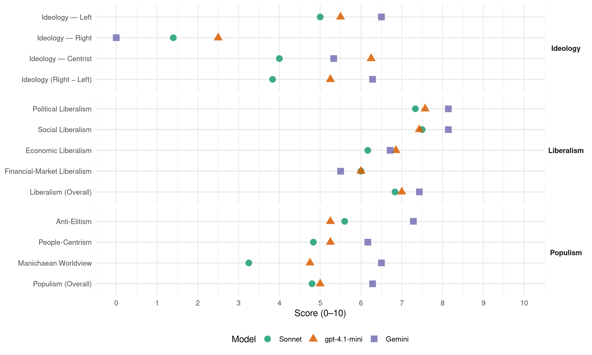

SDSM (North Macedonia, 2014)
manifesto_id 89221_201404
Get full text: This site shows derived annotations and short verbatim quotes only. The full manifesto text is © Manifesto Project / WZB — obtain it via manifesto-project.wzb.eu using the manifesto_id above.
Headline scores
| Dimension | Sonnet | gpt-4.1-mini | Gemini |
|---|---|---|---|
| Populism (Overall) | 4.8 | 5.0 | 6.3 |
| Anti-Elitism | 5.6 | 5.2 | 7.3 |
| People-Centrism | 4.8 | 5.2 | 6.2 |
| Manichaean Worldview | 3.2 | 4.8 | 6.5 |
| Ideology (Right − Left) | 3.8 | 5.2 | 6.3 |
| Liberalism (Overall) | 6.8 | 7.0 | 7.4 |
| Political Liberalism | 7.3 | 7.6 | 8.1 |
| Social Liberalism | 7.5 | 7.4 | 8.1 |
| Economic Liberalism | 6.2 | 6.9 | 6.7 |
| Financial-Market Liberalism | 6.0 | 6.0 | 5.5 |
Evidence per dimension
Economic Liberalism
Gemini · score 6.0 · verified · chunk 1
“развој на приватниот (деловен) сектор”
на два механизма: Забрзан развој на приватниот (деловен) сектор, за тој да стане
Gemini · score 7.0 · verified · chunk 2
“зголеми конкуренцијата во нудењето”
области. Така ќе зголеми конкуренцијата во нудењето на социјални услуги, а со тоа
Gemini · score 8.0 · verified · chunk 3
“либерализацијата на тие пазари да се одвива етапно”
за нивно функционирање. Притоа, ќе внимаваме на: либерализацијата на тие пазари да се одвива етапно, со целосно исполнување на сите
Gemini · score 8.0 · verified · chunk 4
“областите во кои критериумот „квалитет“ се бодува”
тендерите „скроени“ за фирмата-фаворит, (2) ќе се означат точно областите во кои критериумот „квалитет“ се бодува, додека сите останати ќе се вреднуваат
Gemini · score 6.0 · verified · chunk 5
“ослободување од данок на добивка”
насока е и мерката за ослободување од данок на добивка до 30% за вложување
Gemini · score 6.0 · verified · chunk 6
“јавно-приватно партнерство”
во голема мера ќе се користи и моделот на јавно-приватно партнерство. Тоа значи дека преку ЈПП ќе се реализираат
Gemini · score 6.0 · verified · chunk 7
“привлекување на домашни и странски инвестиции”
ќе обезбедиме услови привлекувањето на домашни и странски инвестиции да биде и во рацете на градоначалниците
gpt-4.1-mini · score 7.0 · verified · chunk 1
“зголемување на економската ефикасност и продуктивноста”
Затоа, фокусот на нашите економски активности – што значи како на деловните субјекти, така и на владата – ќе биде ставен врз подобрувањето на економската ефикасност и продуктивноста.
gpt-4.1-mini · score 7.0 · verified · chunk 2
“Ќе создадеме реални услови за домашните фирми да инвестираат во технолошко-индустриските развојни зони”
- Ќе создадеме реални услови за домашните фирми да инвестираат во технолошко-индустриските развојни зони (ТИРЗ), со користење на истите поволности кои сега важат за странските инвеститори; - Проект „Инвестиции сега“: Владата ќе издвои од буџетот до 20 милиони евра секоја година за покривање на трошоците на фирмите за камата за кредити за новозапочнати проекти.
gpt-4.1-mini · score 7.0 · verified · chunk 3
“Ќе субвенционираме согласно моделот на субвенционирање на ЕУ”
Развојни субвенции Субвенциите ќе бидат пазарна мерка која ќе го развие и осовремени земјоделството. Ќе субвенционираме согласно моделот на субвенционирање на ЕУ – по грло добиток и по единица површина.
gpt-4.1-mini · score 7.0 · verified · chunk 4
“Ќе воведеме стимулативен систем на наградување на вработените”
Владата на СДСМ ќе воведе стимулативен систем на наградување на вработените во јавната администрација. Нивната плата ќе биде поврзана со растот на македонската економија.
gpt-4.1-mini · score 7.0 · verified · chunk 5
“Ќе ги ослободиме од плаќање на социјални придонеси сите работодавачи”
Ќе ги ослободиме од плаќање на социјални придонеси сите работодавачи, кои ќе обезбедат прво, вработување на млади лица до 29-годишна возраст во период од 1 година (под услов да ги задржат најмалку 2 години); Ќе го субвенционираме вработувањето на невработени млади лица на возраст до 29 години, со месечна финансиска поддршка за период од 6 месеци (со обврска работодавачот да ги задржи најмалку уште 18 месеци);
gpt-4.1-mini · score 6.0 · verified · chunk 6
“Ќе развиваме доброволното здравствено осигурување како дополнително осигурување”
Ќе развиваме доброволното здравствено осигурување како дополнително осигурување, со кое на граѓаните ќе им се даде можност да обезбедат повисока содржина, обем и стандард на права на здравствени услуги.
gpt-4.1-mini · score 7.0 · verified · chunk 7
“ќе обезбедиме услови за изградба на нови и реконструкција на постечките комунални објекти”
Идната влада на СДСМ ќе пристапи кон реформа на комуналниот сектор, со цел подобрување на квалитетот на услугите по реални цени и зголемување на продуктивноста. Ќе се обезбедат услови за изградба на нови и реконструкција на постечките комунални објекти, преку привлекување на приватен капитал, изнаоѓање на соодветни форми на трансформација, или со стимулирање на јавно-приватни партнерства и воспоставување рамнотежа меѓу профитните бизнис-операции од една страна и обезбедувањето евтини, сигурни, квалитетни и широко достапни услуги за граѓаните, од друга страна.
Sonnet · score 7.0 · verified · chunk 2
“динамично деловно окружување без бариери”
да создадат динамично деловно окружување без бариери за претпријатијата
Sonnet · score 6.0 · verified · chunk 3
“Пазарната либерализација носи корист за крајните корисници”
ЛИБЕРАЛИЗАЦИЈА НА ПАЗАРОТ НА ЕНЕРГИЈА Пазарната либерализација носи корист за крајните корисници. Со прифаќањето на Договорот за основање на Енергетска заедница, Република Македонија презеде обврска за создавање на услови за целосно либерализирање на пазарот
Sonnet · score 6.0 · verified · chunk 4
“ќе се зголеми конкуренцијата во постапките”
ќе се зголеми конкуренцијата во постапките за јавни набавки т.е ќе се избегне досегашната пракса на само еден понудувач
Sonnet · score 6.0 · verified · chunk 5
“ослободување од данок на добивка до 30%”
мерката за ослободување од данок на добивка до 30% за вложување во развој на образование (види поглавје Политика на прераспределба).
Sonnet · score 6.0 · verified · chunk 6
“моделот на јавно-приватно партнерство”
покрај буџетските инвестиции, во голема мера ќе се користи и моделот на јавно-приватно партнерство. Тоа значи дека преку ЈПП ќе се реализираат проекти кои ќе придонесат за решавање на проблемите со отпадот
Sonnet · score 6.0 · verified · chunk 7
“привлекување на домашни и странски инвестиции”
ќе обезбедиме услови привлекувањето на домашни и странски инвестиции да биде и во рацете на градоначалниците и локалната власт.
Financial-Market Liberalism
Gemini · score 5.0 · verified · chunk 1
“странскиот пазар на капитал”
задолжување на државата на домашниот и на странскиот пазар на капитал. Укажувавме постојано
Gemini · score 6.0 · verified · chunk 2
“кредити од комерцијалните банки”
обезбедуваат гаранции за кредити од комерцијалните банки за малите производни фирми кои имаат
gpt-4.1-mini · score 6.0 · verified · chunk 1
“зголемениот јавен долг и растечките фискални дефицити”
Зголемениот јавен долг и растечките фискални дефицити ја загрозуваат економската стабилност, развојните перспективи на државата и благосостојбата на идните генерации.
gpt-4.1-mini · score 6.0 · verified · chunk 3
“Ќе го олесниме пристапот до европските фондови наменети за земјоделство”
Ќе го олесниме пристапот до европските фондови наменети за земјоделство. Ќе ги поедноставиме административните процедури за пријавување, ќе обезбедиме советодавна поддршка за изработка на проекти, и ќе обезбедиме поволни земјоделски кредити.
gpt-4.1-mini · score 6.0 · verified · chunk 4
“Ќе направиме целосна ревизија на Законот за јавни набавки”
Идната влада на СДСМ ќе направи целосна ревизија на Законот за јавни набавки со која: (1) ќе се спречат тендерите „скроени“ за фирмата-фаворит, (2) ќе се означат точно областите во кои критериумот „квалитет“ се бодува, додека сите останати ќе се вреднуваат според критериумот „цена“.
Sonnet · score 6.0 · verified · chunk 2
“гаранции за кредити од комерцијалните банки”
ќе се обезбедуваат гаранции за кредити од комерцијалните банки за малите производни фирми
Sonnet · score 6.0 · verified · chunk 3
“ќе обезбедиме поволни земјоделски кредити”
Ќе ги поедноставиме административните процедури за пријавување, ќе обезбедиме советодавна поддршка за изработка на проекти, и ќе обезбедиме поволни земјоделски кредити за постигнување поголем интерес и искористеност на фондовите.
Sonnet · score 6.0 · verified · chunk 4
“Транспарентноста носи подобар кредитен рејтинг”
Транспарентноста носи подобар кредитен рејтинг, па следствено и поевтини странски кредити; Неодговорното задолжување на властите не може да продолжи кога сметките се јавни
Sonnet · score 6.0 · verified · chunk 7
“бон кредити ќе обезбедиме финансиски средства”
бон кредити ќе обезбедиме финансиски средства за енергетска ефикасност. Ќе го поддржиме создавањето на ЕСКО компании
Political Liberalism
Gemini · score 9.0 · verified · chunk 1
“руши човековите права и демократските институции”
Не ја прифаќаме политиката која ги руши човековите права и демократските институции. Уверени сме
Gemini · score 7.0 · verified · chunk 2
“независност и транспарентност на институциите”
се залага за зголемена независност и транспарентност на институциите; - Ќе го реализираме проектот
Gemini · score 9.0 · verified · chunk 3
“реафирмира начелото на поделба на власта”
Власта на СДСМ го реафирмира начелото на поделба на власта. Ќе го вратиме достоинството на Собранието
Gemini · score 9.0 · verified · chunk 4
“ДЕМОКРАТИЈА И ВЛАДЕЕЊЕ НА ПРАВОТО”
авијација во Република Македонија. ВТОР СТОЛБ: САКАМЕ СЛОБОДА! ДЕМОКРАТИЈА И ВЛАДЕЕЊЕ НА ПРАВОТО СЕГАШНА СОСТОЈБА
Gemini · score 7.0 · verified · chunk 5
“институт Воен правобранител – омбудсман”
Народното правобранителство ќе воведе институт Воен правобранител – омбудсман, со примена на германскиот
Gemini · score 8.0 · verified · chunk 6
“суспендира уставноста и правната држава”
не ја оштетува само нашата физичка стварност, туку ги суспендира уставноста и правната држава, ги урива вредносните системи
Gemini · score 8.0 · verified · chunk 7
“заштита на државните интереси, уставноста и законитоста”
општините ќе добијат поголема самостојност во планирањето, а фокусот на државните органи ќе биде во заштита на државните интереси, уставноста и законитоста.
gpt-4.1-mini · score 8.0 · verified · chunk 1
“владеење на правото, на законите”
Затоа, во нашата програма нудиме мерки и решенија со кои постојното самоволие на власта ќе го замениме со владеење на правото, на законите. Бараме правда за сите, а не само за власта.
gpt-4.1-mini · score 7.0 · verified · chunk 2
“Ќе воведеме можност за заминување во пензија по два основа”
- Ќе воведеме можност за заминување во пензија по два основа: (1) возраст (постојно решение) и (2) работен стаж (ново, дополнително решение. По 35 години работен стаж (за жени) или 40 години (за мажи) граѓанинот сам ќе може да одлучи дали да замине во пензија и пред навршување на 62 односно 64 години; - На оние лица на кои им недостасуваат до 5 години работен стаж за да стекнат право на пензија, ќе им овозможиме да извршат докуп на стажот; - На лицата што нема да извршат докуп на стаж и не се корисници на каква било парична помош од државата, идната влада ќе им даде државна социјална пензија.
gpt-4.1-mini · score 7.0 · verified · chunk 3
“Почитувањето на Уставот, законите и другите правни правила ќе биде највисок принцип”
Владата на СДСМ ќе го замени самоволието со владеење на правото. Почитувањето на Уставот, законите и другите правни правила ќе биде највисок принцип во Република Македонија.
gpt-4.1-mini · score 8.0 · verified · chunk 4
“Почитувањето на Уставот, законите и другите правни правила”
Нашиот пристап Владата на СДСМ ќе го замени самоволието со владеење на правото. Почитувањето на Уставот, законите и другите правни правила ќе биде највисок принцип во Република Македонија.
gpt-4.1-mini · score 8.0 · verified · chunk 5
“Враќање на автономијата на универзитетот”
Ќе ги вратиме достоинството на професорите; автономијата и угледот на универзитетот. Во изминатиот период универзитетот беше свесно ставен на маргините на општеството, а професорите беа замолчени. Ќе ја вратиме автономијата на универзитетот, не затоа што професорите треба да уживаат некакви привилегии, туку затоа што од универзитетите произлегуваат промени, нови и прогресивни идеи; таму се проверуваат и се пренесуваат постоечките знаења и се создаваат нови.
gpt-4.1-mini · score 7.0 · verified · chunk 6
“Ќе воведеме перманентна консултација со Собранието на Република Македонија и широка дебата”
Ќе воведеме перманентна консултација со Собранието на Република Македонија и широка дебата за придобивките и ризиците од членството во Европската Унија.
gpt-4.1-mini · score 8.0 · verified · chunk 7
“прозрачноста во делот на управувањето со јавните финансии на општината”
Ќе воведеме партиципативно буџетирање, со цел примена на принципите за добро владеење од страна на локалната самоуправа, особено транспарентноста во делот на управувањето со јавните финансии на општината. Крајните корисници на партиципативното буџетирање се жителите на општината, кои со оваа техника добиваат можност да ги дадат своите сугестии во распоредувањето на финансиските средства на општината по поодделни услуги и инфраструктура.
Sonnet · score 7.0 · verified · chunk 2
“независност и транспарентност на институциите”
Идната влада на СДСМ ќе се залага за зголемена независност и транспарентност на институциите
Sonnet · score 8.0 · verified · chunk 3
“Ќе го вратиме достоинството на Собранието”
Власта на СДСМ го реафирмира начелото на поделба на власта. Ќе го вратиме достоинството на Собранието, кое е целосно деградирано и под доминација на Владата. Собранието ќе стане место за дебата, за креирање политики
Sonnet · score 9.0 · verified · chunk 4
“Ќе го вратиме дигнитетот на Уставниот суд”
Ќе го вратиме дигнитетот на Уставниот суд, претворајќи го во орган кој ги штити уставноста и законитоста, наместо во орган кој ја спроведува волјата на извршната власт
Sonnet · score 6.0 · verified · chunk 5
“автономијата на универзитетите”
Владата на ВМРО-ДПМНЕ грубо ја нарушува автономијата на универзитетите и речиси воопшто не вложува во научните истражувања.
Sonnet · score 7.0 · verified · chunk 6
“ќе ја зајакне улогата на Собранието”
За зацврстување на Република Македонија како парламентарна демократија, ќе ја зајакне улогата на Собранието и неговите комисии во утврдувањето и контролата на спроведувањето на стратешките цели во надворешната политика.
Sonnet · score 7.0 · verified · chunk 7
“транспарентноста во делот на управувањето”
Ќе воведеме партиципативно буџетирање, со цел примена на принципите за добро владеење од страна на локалната самоуправа, особено транспарентноста во делот на управувањето со јавните финансии на општината.
Liberalism (Overall)
Gemini · score 7.0 · verified · chunk 1
“демократско општество по европски терк”
Сакаме да изградиме македонско демократско општество по европски терк. Затоа, во нашата
Gemini · score 7.0 · verified · chunk 2
“независност и транспарентност на институциите”
се залага за зголемена независност и транспарентност на институциите; - Ќе го реализираме проектот
Gemini · score 8.0 · verified · chunk 3
“реафирмира начелото на поделба на власта”
Власта на СДСМ го реафирмира начелото на поделба на власта. Ќе го вратиме достоинството на Собранието
Gemini · score 9.0 · verified · chunk 4
“ДЕМОКРАТИЈА И ВЛАДЕЕЊЕ НА ПРАВОТО”
авијација во Република Македонија. ВТОР СТОЛБ: САКАМЕ СЛОБОДА! ДЕМОКРАТИЈА И ВЛАДЕЕЊЕ НА ПРАВОТО СЕГАШНА СОСТОЈБА
Gemini · score 7.0 · verified · chunk 5
“институт Воен правобранител – омбудсман”
Народното правобранителство ќе воведе институт Воен правобранител – омбудсман, со примена на германскиот
Gemini · score 7.0 · verified · chunk 6
“суспендира уставноста и правната држава”
не ја оштетува само нашата физичка стварност, туку ги суспендира уставноста и правната држава, ги урива вредносните системи
Gemini · score 7.0 · verified · chunk 7
“заштита на државните интереси, уставноста и законитоста”
општините ќе добијат поголема самостојност во планирањето, а фокусот на државните органи ќе биде во заштита на државните интереси, уставноста и законитоста.
gpt-4.1-mini · score 7.0 · verified · chunk 1
“владеење на правото, на законите”
Затоа, во нашата програма нудиме мерки и решенија со кои постојното самоволие на власта ќе го замениме со владеење на правото, на законите. Бараме правда за сите, а не само за власта.
gpt-4.1-mini · score 7.0 · verified · chunk 2
“Ќе воведеме можност за заминување во пензија по два основа”
- Ќе воведеме можност за заминување во пензија по два основа: (1) возраст (постојно решение) и (2) работен стаж (ново, дополнително решение. По 35 години работен стаж (за жени) или 40 години (за мажи) граѓанинот сам ќе може да одлучи дали да замине во пензија и пред навршување на 62 односно 64 години; - На оние лица на кои им недостасуваат до 5 години работен стаж за да стекнат право на пензија, ќе им овозможиме да извршат докуп на стажот; - На лицата што нема да извршат докуп на стаж и не се корисници на каква било парична помош од државата, идната влада ќе им даде државна социјална пензија.
gpt-4.1-mini · score 7.0 · verified · chunk 3
“Почитувањето на Уставот, законите и другите правни правила ќе биде највисок принцип”
Владата на СДСМ ќе го замени самоволието со владеење на правото. Почитувањето на Уставот, законите и другите правни правила ќе биде највисок принцип во Република Македонија.
gpt-4.1-mini · score 7.0 · verified · chunk 4
“Почитувањето на Уставот, законите и другите правни правила”
Нашиот пристап Владата на СДСМ ќе го замени самоволието со владеење на правото. Почитувањето на Уставот, законите и другите правни правила ќе биде највисок принцип во Република Македонија.
gpt-4.1-mini · score 7.0 · verified · chunk 5
“Враќање на автономијата на универзитетот”
Ќе ги вратиме достоинството на професорите; автономијата и угледот на универзитетот. Во изминатиот период универзитетот беше свесно ставен на маргините на општеството, а професорите беа замолчени. Ќе ја вратиме автономијата на универзитетот, не затоа што професорите треба да уживаат некакви привилегии, туку затоа што од универзитетите произлегуваат промени, нови и прогресивни идеи; таму се проверуваат и се пренесуваат постоечките знаења и се создаваат нови.
gpt-4.1-mini · score 7.0 · verified · chunk 6
“Ќе воведеме перманентна консултација со Собранието на Република Македонија и широка дебата”
Ќе воведеме перманентна консултација со Собранието на Република Македонија и широка дебата за придобивките и ризиците од членството во Европската Унија.
gpt-4.1-mini · score 7.0 · verified · chunk 7
“прозрачноста во делот на управувањето со јавните финансии на општината”
Ќе воведеме партиципативно буџетирање, со цел примена на принципите за добро владеење од страна на локалната самоуправа, особено транспарентноста во делот на управувањето со јавните финансии на општината. Крајните корисници на партиципативното буџетирање се жителите на општината, кои со оваа техника добиваат можност да ги дадат своите сугестии во распоредувањето на финансиските средства на општината по поодделни услуги и инфраструктура.
Sonnet · score 7.0 · verified · chunk 2
“еднакви можности, недискриминација и родова рамноправност”
прашањето на еднакви можности, недискриминација и родова рамноправност ќе биде поставено на ниво согласно меѓународните стандарди
Sonnet · score 7.0 · verified · chunk 3
“Почитувањето на Уставот, законите и другите правни правила”
Владата на СДСМ ќе го замени самоволието со владеење на правото. Почитувањето на Уставот, законите и другите правни правила ќе биде највисок принцип во Република Македонија.
Sonnet · score 7.0 · verified · chunk 4
“владеење на правото во Република Македонија”
ќе го направиме судството столб на демократијата и владеењето на правото во Република Македонија. Ќе се бориме за радикално и трајно решавање на состојбите во оваа сфера.
Sonnet · score 6.0 · verified · chunk 5
“родова еднаквост и ќе ги зајакнеме пораките за рамноправност”
ќе ги преиспитаме наставните содржини и учебници и од аспект на родова еднаквост и ќе ги зајакнеме пораките за рамноправност кои ги добиваат децата во училиште.
Sonnet · score 7.0 · verified · chunk 6
“демократска Република Македонија”
Наша заедничка вредност е изградбата на демократска Република Македонија. Наша заедничка задача треба да е изградбата на помодерно образование.
Sonnet · score 7.0 · verified · chunk 7
“транспарентноста во делот на управувањето”
Ќе воведеме партиципативно буџетирање, со цел примена на принципите за добро владеење од страна на локалната самоуправа, особено транспарентноста во делот на управувањето со јавните финансии на општини
Anti-Elitism
Gemini · score 8.0 · verified · chunk 1
“злоупотребува сите алатки на економскиот систем”
оваа владејачка елита упорно ги злоупотребува сите алатки на економскиот систем во своја полза.
Gemini · score 6.0 · verified · chunk 2
“со висок степен на корупција”
дигиталниот јаз, без реални анализи и со висок степен на корупција. На пример, проектот „Компјутер за
Gemini · score 8.0 · verified · chunk 3
“Владата на ВМРО-ДПМНЕ ги подјарми не само граѓаните”
системот на самоволие, неодговорност и несигурност. Владата на ВМРО-ДПМНЕ ги подјарми не само граѓаните, туку и сите институции, креирајќи систем
Gemini · score 8.0 · verified · chunk 4
“Владата на ВМРО-ДПМНЕ ги подјарми не само граѓаните”
нашите права и слободи. Владата на ВМРО-ДПМНЕ ги подјарми не само граѓаните, туку и сите институции, креирајќи систем
Gemini · score 7.0 · verified · chunk 5
“погубните политики на актуелната власт”
Младите во Република Македонија најсилно ги почувствуваа погубните политики на актуелната власт. Според Светска банка
Gemini · score 8.0 · verified · chunk 6
“окупирани од партиските војници”
Најважните позиции во македонското здравството се бесрамно окупирани од партиските војници, без соодветен работен стаж
Gemini · score 6.0 · verified · chunk 7
“задоволување на потребите и желбите на централната власт”
наместо да се грижи за подобрување на квалитетот на животот на своите граѓани локалната власт е ставена во функција на задоволување на потребите и желбите на централната власт, која во нивно име одлучува
gpt-4.1-mini · score 8.0 · verified · chunk 1
“власта ја поимаат пред сè како моќ”
Челниците на ВМРО-ДПМНЕ покажаа дека власта ја поимаат пред сè како моќ. Моќ да се одлучува за судбините на други; моќ за распределување на ресурсите и богатството, и тоа на неправеден начин; моќ за потчинување и корумпирање на голем број луѓе; моќ да се прави партиска селекција (при вработување, тендери и доделување субвенции); моќ за задоволување на суетите на неколкумина.
gpt-4.1-mini · score 3.0 · verified · chunk 3
“Власта е над правото, над Уставот и законите”
Во изминативе години ВМРО-ДПМНЕ ја претвори Република Македонија во земја со нарушена демократија во која владее самоволието, а не правото. Власта е над правото, над Уставот и законите на Република Македонија. Ним им е дозволено неказнето да ги кршат правилата, неказнето да влегуваат во криминални, коруптивни зделки, неказнето да исфрлаат новинари и пратеници од Собранието на Република Македонија, неказнето да си играат со нашите права и слободи.
gpt-4.1-mini · score 7.0 · verified · chunk 4
“Власта е над правото, над Уставот и законите”
Власта е над правото, над Уставот и законите на Република Македонија. Ним им е дозволено неказнето да ги кршат правилата, неказнето да влегуваат во криминални, коруптивни зделки, неказнето да исфрлаат новинари и пратеници од Собранието на Република Македонија, неказнето да си играат со нашите права и слободи.
gpt-4.1-mini · score 3.0 · verified · chunk 6
“Власта избра политика на контролирани конфликти во кои луѓето се поделија на „наши“ и „ваши“”
Власта избра политика на контролирани конфликти во кои луѓето се поделија на „наши“ и „ваши“. Политика која гради минато, а не иднина.
Sonnet · score 6.0 · verified · chunk 3
“неказнето да влегуваат во криминални, коруптивни зделки”
Власта е над правото, над Уставот и законите на Република Македонија. Ним им е дозволено неказнето да ги кршат правилата, неказнето да влегуваат во криминални, коруптивни зделки, неказнето да исфрлаат новинари
Sonnet · score 8.0 · verified · chunk 4
“Власта е над правото, над Уставот”
ВМРО-ДПМНЕ ја претвори Република Македонија во земја со нарушена демократија во која владее самоволието, а не правото. Власта е над правото, над Уставот и законите на Република Македонија.
Sonnet · score 4.0 · verified · chunk 5
“партиските војници, без соодветен работен стаж”
Најважните позиции во македонското здравството се бесрамно окупирани од партиските војници, без соодветен работен стаж и едукација.
Sonnet · score 6.0 · verified · chunk 6
“Најважните позиции во македонското здравството се бесрамно окупирани од партиските војници”
Голем број стручни кадри заминаа во приватното здравство и во странство, а во државното здравство се зголеми бројот на партиските вработувања, особено во административните служби. Болниците не ги чинат квалитетните ѕидови, туку стручњаците кои се основа на здравствениот систем на секоја земја.
Sonnet · score 4.0 · verified · chunk 7
“централната власт прави опструкции на општините”
Истовремено, централната власт прави опструкции на општините каде локалната власт е од друга политичка партија.
Ideology — Centrist
Gemini · score 3.0 · verified · chunk 1
“работиме во интерес на оние кои ни ја довериле”
одговорноста за државата и да работиме во интерес на оние кои ни ја довериле – граѓаните.
Gemini · score 7.0 · verified · chunk 4
“Владата на ВМРО-ДПМНЕ ги подјарми не само граѓаните”
нашите права и слободи. Владата на ВМРО-ДПМНЕ ги подјарми не само граѓаните, туку и сите институции, креирајќи систем
Gemini · score 6.0 · verified · chunk 7
“граѓаните отчетот за своето работење ќе го даваат пред граѓаните”
Наместо пред премиерот и Владата, градоначалниците отчетот за своето работење ќе го даваат пред граѓаните, кои непосредно ги избрале
gpt-4.1-mini · score 7.0 · verified · chunk 1
“граѓаните се нивни „слуги“”
Нашиот став е дека, во демократски, повеќепартиски систем, пиедесталот им припаѓа на граѓаните, а оние кои се на власт се нивни „слуги“. Ние не бараме поддршка за добивање на власта за да се стекнеме со моќ.
gpt-4.1-mini · score 5.0 · verified · chunk 3
“Ќе промовира јавни дебати за сите значајни прашања”
Идната влада на СДСМ ќе промовира јавни дебати за сите значајни прашања, дебати на кои ќе се почитува принципот на слободен говор и вистинска размена на мислења, со цел да се дојде до поквалитетни политики.
gpt-4.1-mini · score 8.0 · verified · chunk 4
“Ќе промовира јавни дебати за сите значајни прашања”
Идната влада на СДСМ ќе промовира јавни дебати за сите значајни прашања, дебати на кои ќе се почитува принципот на слободен говор и вистинска размена на мислења, со цел да се дојде до поквалитетни политики.
gpt-4.1-mini · score 5.0 · verified · chunk 6
“Ќе гради стабилни меѓуетнички односи”
Ќе гради стабилни меѓуетнички односи Наша цел е и да имаме стабилни меѓуетнички односи. Тоа е главниот предуслов за стабилноста и безбедноста на Македонија.
Sonnet · score 4.0 · verified · chunk 3
“Потрошувачите се оставени во немилост”
институциите кои треба да се грижат за нивните права (особено Регулаторната комисија за енергетика и Советот за заштита на потрошувачите), целосно се ставени во интерес на компаниите. Потрошувачите се оставени во немилост.
Sonnet · score 5.0 · verified · chunk 4
“Систем во кој сите се еднакви пред законот”
Нашата цел е да создадеме систем кој ќе ја гуши, а нема да ја шири корупцијата. Систем во кој ќе бидат познати правилата на игра и кој ќе гарантира дека сите се еднакви пред законот.
Sonnet · score 2.0 · verified · chunk 5
“Младите сакаат европска иднина”
Младите сакаат европска иднина, а не лажно минато. Токму затоа, сметаме дека младинската политика треба да биде јадрото
Sonnet · score 5.0 · verified · chunk 7
“подобрување на квалитетот на живеење на граѓаните”
Сите реформи ќе бидат со една единствена цел: подобрување на квалитетот на живеење на граѓаните во локалните заедници.
Ideology — Left
Gemini · score 8.0 · verified · chunk 1
“праведна распределба на материјалните добра”
Социјалната правда подразбира и праведна распределба на материјалните добра во државата.
Gemini · score 7.0 · verified · chunk 2
“Политика на универзална благосостојба”
плаќаат“. Политика на универзална благосостојба е нешто што граѓаните си го
Gemini · score 6.0 · verified · chunk 3
“минимални комуникациски услуги на социјално загрозените семејства”
универзалната услуга – обезбедување на минимални комуникациски услуги на социјално загрозените семејства на тој начин што би се доделувал
Gemini · score 7.0 · verified · chunk 5
“оваа мерка е типично социјалдемократска”
социјални слоеви. Оваа мерка е типично социјалдемократска и овозможува еднакви шанси за
Gemini · score 6.0 · verified · chunk 6
“партиципацијата за сиромашните граѓани”
Ќе ја укинеме партиципацијата за лекување на децата до 14-годишна возраст и партиципацијата за сиромашните граѓани
Gemini · score 5.0 · verified · chunk 7
“социјалната заштита и грижата кон ранливите”
Капитални инвестиции во образованието по локален терк… Социјалната заштита и грижата кон ранливите катергории на граѓани ќе биде во фокусот
gpt-4.1-mini · score 8.0 · verified · chunk 1
“праведна распределба на материјалните добра”
Социјалната правда подразбира и праведна распределба на материјалните добра во државата. Преку воспоставувањето на социјална правда ќе го вратиме достоинството на граѓаните, а тоа значи минимални услови за пристоен живот.
gpt-4.1-mini · score 4.0 · verified · chunk 3
“Ќе го укинеме персоналниот данок за приходи остварени од земјоделска дејност”
Ослободување на земјоделците од персоналниот данок Ќе го укинеме персоналниот данок за приходи остварени од земјоделска дејност. Поконкретно, приходите од земјоделска дејност нема да се оданочуваат.
gpt-4.1-mini · score 6.0 · verified · chunk 4
“Ќе создадеме систем кој ќе ја гуши, а нема да ја шири корупцијата”
Вистинската борба против корупцијата мора да почне. Нашата цел е да создадеме систем кој ќе ја гуши, а нема да ја шири корупцијата. Систем во кој ќе бидат познати правилата на игра и кој ќе гарантира дека сите се еднакви пред законот.
gpt-4.1-mini · score 4.0 · verified · chunk 6
“Ќе работиме на намалување на социјалните и економските разлики преку проекти со интеграциски цели”
Ќе работиме на намалување на социјалните и економските разлики преку проекти со интеграциски цели, и преку градење правична и непристрасна држава.
Sonnet · score 6.0 · verified · chunk 2
“праведна распределба на животните можности”
Нашата социјална политика ќе се занимава со економската безбедност, со праведна распределба на животните можности
Sonnet · score 5.0 · verified · chunk 3
“добивката ќе се распределува на поправеден”
Тоа регулаторно тело ќе спречува нерамномерно прелевање на доходот преку механизмот на цените: добивката ќе се распределува на поправеден (порамноправен) начин меѓу производителите и откупувачите.
Sonnet · score 5.0 · verified · chunk 4
“фер шанса и на малите и микро компании”
со новиот закон за јавни набавки ќе им се даде фер шанса и на малите и микро компании кои честопати неосновано се елиминираат во постапките
Sonnet · score 5.0 · verified · chunk 5
“Ќе ги ослободиме од плаќање на социјални придонеси”
Ќе ги ослободиме од плаќање на социјални придонеси сите работодавачи, кои ќе обезбедат прво, вработување на млади лица до 29-годишна возраст
Sonnet · score 5.0 · verified · chunk 6
“Ќе ја укинеме партиципацијата за лекување на децата”
Ќе ја укинеме партиципацијата за лекување на децата до 14-годишна возраст (во земјата и во странство) и партиципацијата за сиромашните граѓани
Sonnet · score 4.0 · verified · chunk 7
“пакети од грантови и поволни кредити”
Ќе обезбедиме пакети од грантови и поволни кредити за промена и приспособување на постројките во фабриките-загадувачи
Ideology (Right − Left)
Gemini · score 8.0 · verified · chunk 1
“нашата социјалдемократска цел во општеството”
квалитет на живот. Тоа е нашата социјалдемократска цел во општеството. Доста ни е
Gemini · score 5.0 · verified · chunk 2
“Политика на универзална благосостојба”
плаќаат“. Политика на универзална благосостојба е нешто што граѓаните си го
Gemini · score 6.0 · verified · chunk 3
“минимални комуникациски услуги на социјално загрозените семејства”
универзалната услуга – обезбедување на минимални комуникациски услуги на социјално загрозените семејства на тој начин што би се доделувал
Gemini · score 7.0 · verified · chunk 4
“Владата на ВМРО-ДПМНЕ ги подјарми не само граѓаните”
нашите права и слободи. Владата на ВМРО-ДПМНЕ ги подјарми не само граѓаните, туку и сите институции, креирајќи систем
Gemini · score 7.0 · verified · chunk 5
“оваа мерка е типично социјалдемократска”
социјални слоеви. Оваа мерка е типично социјалдемократска и овозможува еднакви шанси за
Gemini · score 6.0 · verified · chunk 6
“партиципацијата за сиромашните граѓани”
Ќе ја укинеме партиципацијата за лекување на децата до 14-годишна возраст и партиципацијата за сиромашните граѓани
Gemini · score 5.0 · verified · chunk 7
“задоволување на потребите и желбите на централната власт”
наместо да се грижи за подобрување на квалитетот на животот на своите граѓани локалната власт е ставена во функција на задоволување на потребите и желбите на централната власт, која во нивно име одлучува
gpt-4.1-mini · score 7.0 · verified · chunk 1
“праведна распределба на материјалните добра”
Социјалната правда подразбира и праведна распределба на материјалните добра во државата. Преку воспоставувањето на социјална правда ќе го вратиме достоинството на граѓаните, а тоа значи минимални услови за пристоен живот.
gpt-4.1-mini · score 4.0 · verified · chunk 3
“Ќе го укинеме персоналниот данок за приходи остварени од земјоделска дејност”
Ослободување на земјоделците од персоналниот данок Ќе го укинеме персоналниот данок за приходи остварени од земјоделска дејност. Поконкретно, приходите од земјоделска дејност нема да се оданочуваат.
gpt-4.1-mini · score 6.0 · verified · chunk 4
“Власта е над правото, над Уставот и законите”
Власта е над правото, над Уставот и законите на Република Македонија. Ним им е дозволено неказнето да ги кршат правилата, неказнето да влегуваат во криминални, коруптивни зделки, неказнето да исфрлаат новинари и пратеници од Собранието на Република Македонија, неказнето да си играат со нашите права и слободи.
gpt-4.1-mini · score 4.0 · verified · chunk 6
“Власта избра политика на контролирани конфликти во кои луѓето се поделија на „наши“ и „ваши“”
Власта избра политика на контролирани конфликти во кои луѓето се поделија на „наши“ и „ваши“. Политика која гради минато, а не иднина.
Sonnet · score 4.0 · verified · chunk 2
“праведна распределба на животните можности”
Нашата социјална политика ќе се занимава со економската безбедност, со праведна распределба на животните можности
Sonnet · score 4.0 · verified · chunk 3
“добивката ќе се распределува на поправеден”
Тоа регулаторно тело ќе спречува нерамномерно прелевање на доходот преку механизмот на цените: добивката ќе се распределува на поправеден (порамноправен) начин меѓу производителите и откупувачите.
Sonnet · score 5.0 · verified · chunk 4
“Власта е над правото, над Уставот”
ВМРО-ДПМНЕ ја претвори Република Македонија во земја со нарушена демократија во која владее самоволието, а не правото. Власта е над правото, над Уставот и законите на Република Македонија.
Sonnet · score 3.0 · verified · chunk 5
“Ќе ги ослободиме од плаќање на социјални придонеси”
Ќе ги ослободиме од плаќање на социјални придонеси сите работодавачи, кои ќе обезбедат прво, вработување на млади лица до 29-годишна возраст
Sonnet · score 4.0 · verified · chunk 6
“нашата социјалдемократска цел во општеството”
Тоа е нашата социјалдемократска цел во општеството. Секој човек сака да расте во средина во која ќе се чувствува културно слободен
Sonnet · score 3.0 · verified · chunk 7
“Волјата на граѓанинот пред сè”
Ќе се заложиме за промена на избирачкиот процес за избор на градоначалник и советници, со кој целосно ќе се запази волјата на граѓаните. Волјата на граѓанинот пред сè
Ideology — Right
Gemini · score 0.0 · verified · chunk 1
“Доста ни е од национализам”
социјалдемократска цел во општеството. Доста ни е од национализам и етноцентризам. Сакаме да
gpt-4.1-mini · score 2.0 · verified · chunk 1
“Доста ни е од национализам и етноцентризам”
Доста ни е од национализам и етноцентризам. Сакаме да градиме демократско и толерантно општество. Доста ни е од омраза и предрасуди, доста ни се тепачките по училиштата, доста ни е од поделби и дискриминација.
gpt-4.1-mini · score 3.0 · verified · chunk 3
“Ќе ја вратиме земјата на оние кои живеат од неа – вистинските земјоделци”
Ќе ја вратиме земјата на оние кои живеат од неа – вистинските земјоделци. Сега дел од земјоделското земјиште е во раце на поединци на кои им е доделено со концесија и кои добиваат субвенции за него но, не го обработуваат.
gpt-4.1-mini · score 3.0 · verified · chunk 4
“Ќе гарантираме целосна слобода на вероисповед”
Владата на СДСМ ќе гарантира целосна слобода на вероисповед и ќе се залага за доследно почитување на дигнитетот на верските заедници во Република Македонија. Владата на СДСМ нема да дозволи политичка злоупотреба на верските чувства на граѓаните и политичка инструментализација на верските заедници.
gpt-4.1-mini · score 2.0 · verified · chunk 6
“Нема да прифати никаков разговор за идентитетски прашања”
Идната влада на СДСМ нема да прифати никаков разговор за идентитетски прашања. За можните решенија остануваме на определбата за референдумско изјаснување на граѓаните.
Sonnet · score 1.0 · verified · chunk 2
“враќањето на лицата заминати од Македонија”
Ќе водиме активна политика за враќање на лицата од Македонија кои се заминати на работа во странство
Sonnet · score 2.0 · verified · chunk 4
“спречување на илегалната миграција и трговијата”
Ќе ги зајакнеме капацитетите на институциите за спречување на нелегалната миграција и трговијата со луѓе
Sonnet · score 1.0 · verified · chunk 5
“членство во НАТО е историска шанса”
Нашето членство во НАТО е историска шанса за затворање на сите прашања за безбедноста и одбраната на Македонија.
Sonnet · score 2.0 · verified · chunk 6
“промоцијата и меѓународната афирмација на македонскиот јазичен”
се намали бројот на изучувачи на македонскиот јазик на научно ниво во странство, се загрози промоцијата и меѓународната афирмација на македонскиот јазичен, а со тоа и на целокупниот идентитет на нацијата.
Sonnet · score 1.0 · verified · chunk 7
“злоупотребува историските национални чувства”
наместо да ги злоупотребува историските национални чувства и емоции на граѓаните, СДСМ нуди иднина и задоволување на основните секојдневни потреби
Manichaean Worldview
Gemini · score 6.0 · verified · chunk 1
“збогатување на една мала елита”
економски политики со само една цел: збогатување на една мала елита. А на чиј грб?
Gemini · score 7.0 · verified · chunk 3
“Владата на СДСМ ќе го замени самоволието со владеење на правото”
самоволие, неодговорност и несигурност. Владата на СДСМ ќе го замени самоволието со владеење на правото. Почитувањето на Уставот, законите
Gemini · score 7.0 · verified · chunk 4
“Нѐ делеа на „предавници” и „патриоти””
земја на политички затвореници. Нѐ делеа на „предавници” и „патриоти”, „пријатели” и „непријатели”. Се обидуваа
Gemini · score 6.0 · verified · chunk 5
“бесрамно окупирани од партиските војници”
Најважните позиции во македонското здравството се бесрамно окупирани од партиските војници, без соодветен работен стаж
Gemini · score 8.0 · verified · chunk 6
“портокалова пералница за пари”
се покажуваат точни тврдењата на СДСМ дека се работи за „портокалова пералница за пари“, затоа што секојдневно се соочуваме
Gemini · score 5.0 · verified · chunk 7
“наместо да ги злоупотребува историските национални чувства”
На тој начин, наместо да ги злоупотребува историските национални чувства и емоции на граѓаните, СДСМ нуди иднина
gpt-4.1-mini · score 6.0 · verified · chunk 1
“најголем дел од доходот беше прелеван кон побогатите”
Во изминатите години под раководството на ВМРО-ДПМНЕ, се водеа политики преку кои, на систематски начин, најголем дел од доходот беше прелеван кон побогатите, а мал дел од него кон сиромашните граѓани. Затоа, богатите станаа побогати, а сиромашните секојдневно стануваат сè посиромашни.
gpt-4.1-mini · score 3.0 · verified · chunk 3
“Власта е над правото, над Уставот и законите”
Во изминативе години ВМРО-ДПМНЕ ја претвори Република Македонија во земја со нарушена демократија во која владее самоволието, а не правото. Власта е над правото, над Уставот и законите на Република Македонија. Ним им е дозволено неказнето да ги кршат правилата, неказнето да влегуваат во криминални, коруптивни зделки, неказнето да исфрлаат новинари и пратеници од Собранието на Република Македонија, неказнето да си играат со нашите права и слободи.
gpt-4.1-mini · score 7.0 · verified · chunk 4
“Нѐ делеа на „предавници” и „патриоти”, „пријатели” и „непријатели””
Република Македонија стана земја на политички затвореници. Нѐ делеа на „предавници” и „патриоти”, „пријатели” и „непријатели”. Се обидуваа да нѐ замолчат, измислуваа „контрапротести” користејќи недолжни, уценети граѓани како жив штит меѓу нив и оние кои протестираа.
gpt-4.1-mini · score 3.0 · verified · chunk 6
“Власта профитира од тие поделби”
Причината е едноставна: власта профитира од тие поделби. Моделот што го промовираат е во интерес на една мала група во врхушката, која работи спротивно на интересите на државата и нејзините граѓани.
Sonnet · score 2.0 · verified · chunk 2
“непромислено трошење на народни пари”
претставуваше класичен пример за непромислено трошење на народни пари, во услови кога ниту наставните
Sonnet · score 5.0 · verified · chunk 3
“Владата на ВМРО-ДПМНЕ ги подјарми не само граѓаните”
Владата на ВМРО-ДПМНЕ ги подјарми не само граѓаните, туку и сите институции, креирајќи систем на самоволие, неодговорност и несигурност.
Sonnet · score 3.0 · verified · chunk 5
“образованието стана предмет на политички манипулации и популизам”
Затоа нашето образование стана предмет на политички манипулации и популизам.
Sonnet · score 3.0 · verified · chunk 7
“НЕ за Скопје 2014, НЕ за луксуз”
НЕ за Скопје 2014, НЕ за луксуз – ДА за Република Македонија. Република Македонија не е и не смее да биде само Градот Скопје.
People-Centrism
Gemini · score 7.0 · verified · chunk 1
“пиедесталот им припаѓа на граѓаните”
повеќепартиски систем, пиедесталот им припаѓа на граѓаните, а оние кои се на власт
Gemini · score 5.0 · verified · chunk 3
“нашите права и слободи”
новинари и пратеници од Собранието, неказнето да си играат со нашите права и слободи. Владата на ВМРО-ДПМНЕ ги подјарми
Gemini · score 6.0 · verified · chunk 4
“СЕ ОБВРЗУВАМЕ НА ОТЧЕТНОСТ ПРЕД ГРАЃАНИТЕ”
оние кои ја спроведуваат власта. СЕ ОБВРЗУВАМЕ НА ОТЧЕТНОСТ ПРЕД ГРАЃАНИТЕ И УЧЕСТВО ВО ЈАВНИ ДЕБАТИ Идната
Gemini · score 5.0 · verified · chunk 5
“интересите на Република Македонија”
безбедносна и одбранбена политика ги штити нашите темелни вредности и интересите на Република Македонија. Нашето членство во НАТО
Gemini · score 7.0 · verified · chunk 6
“нетранспарентно трошење на народни пари”
Набавките на апаратура се сведуваат на наместени тендери и нетранспарентно трошење на народни пари, недостига медицински материјал
Gemini · score 7.0 · verified · chunk 7
“целосно ќе се запази волјата на граѓаните”
за промена на избирачкиот процес за избор на градоначалник и советници, со кој целосно ќе се запази волјата на граѓаните. Градоначалникот, заедно со листата
gpt-4.1-mini · score 7.0 · verified · chunk 1
“граѓаните се нивни „слуги“”
Нашиот став е дека, во демократски, повеќепартиски систем, пиедесталот им припаѓа на граѓаните, а оние кои се на власт се нивни „слуги“. Ние не бараме поддршка за добивање на власта за да се стекнеме со моќ.
gpt-4.1-mini · score 2.0 · verified · chunk 3
“граѓаните се оштетени со големото покачување на цената”
Од друга страна, граѓаните се оштетени со големото покачување на цената на електричната енергија. Заради погрешната енергетска политика, денес Република Македонија е голем зависник од увоз на сите видови енергија.
gpt-4.1-mini · score 8.0 · verified · chunk 4
“Ќе ја вратиме предвидливоста на државните активности и сигурноста на граѓаните”
Правдата и правата за граѓаните ќе бидат остварливи врз основа на закон, а нема да зависат од волјата на оние кои ја спроведуваат власта. Ќе ја вратиме предвидливоста на државните активности и сигурноста на граѓаните.
gpt-4.1-mini · score 4.0 · verified · chunk 6
“Секој човек е горд на својот идентитет, на својата јазична, етничка и верска посебност”
Секој човек е горд на својот идентитет, на својата јазична, етничка и верска посебност. Таа посебност нè прави различни и побогати и им овозможува на нашите деца да растат во културна благосостојба.
Sonnet · score 4.0 · verified · chunk 2
“Важно ни е сите граѓани”
Важно ни е сите граѓани, на целата територија, да имаат достоинствен живот.
Sonnet · score 5.0 · verified · chunk 3
“Правдата и правата за граѓаните ќе бидат остварливи”
Ќе ја вратиме предвидливоста на државните активности и сигурноста на граѓаните. Правдата и правата за граѓаните ќе бидат остварливи врз основа на закон, а нема да зависат од волјата на оние кои ја спроведуваат власта.
Sonnet · score 7.0 · verified · chunk 4
“Правдата и правата за граѓаните”
Ќе ја вратиме предвидливоста на државните активности и сигурноста на граѓаните. Правдата и правата за граѓаните ќе бидат остварливи врз основа на закон
Sonnet · score 3.0 · verified · chunk 5
“нетранспарентно трошење на народни пари”
Набавките на апаратура се сведуваат на наместени тендери и нетранспарентно трошење на народни пари, недостига медицински материјал
Sonnet · score 5.0 · verified · chunk 6
“Здрави граѓани се предуслов за здраво и напредно општество”
НАШИОТ ПРИСТАП Здрави граѓани се предуслов за здраво и напредно општество. Болниот човек не е во состојба да работи и да остварува приходи, што дополнително ја загрозува егзистенцијата на неговото семејство.
Sonnet · score 5.0 · verified · chunk 7
“Волјата на граѓанинот пред сè”
Ќе се заложиме за промена на избирачкиот процес за избор на градоначалник и советници, со кој целосно ќе се запази волјата на граѓаните. Волјата на граѓанинот пред сè
Populism (Overall)
Gemini · score 7.0 · verified · chunk 1
“злоупотреба на системот од страна на владејачката елита”
мора да престане злоупотреба на системот од страна на владејачката елита, а репрезентативната демократија
Gemini · score 3.0 · verified · chunk 2
“со висок степен на корупција”
дигиталниот јаз, без реални анализи и со висок степен на корупција. На пример, проектот „Компјутер за
Gemini · score 7.0 · verified · chunk 3
“Владата на ВМРО-ДПМНЕ ги подјарми не само граѓаните”
системот на самоволие, неодговорност и несигурност. Владата на ВМРО-ДПМНЕ ги подјарми не само граѓаните, туку и сите институции, креирајќи систем
Gemini · score 7.0 · verified · chunk 4
“Владата на ВМРО-ДПМНЕ ги подјарми не само граѓаните”
нашите права и слободи. Владата на ВМРО-ДПМНЕ ги подјарми не само граѓаните, туку и сите институции, креирајќи систем
Gemini · score 6.0 · verified · chunk 5
“погубните политики на актуелната власт”
Младите во Република Македонија најсилно ги почувствуваа погубните политики на актуелната власт. Според Светска банка
Gemini · score 8.0 · verified · chunk 6
“портокалова пералница за пари”
се покажуваат точни тврдењата на СДСМ дека се работи за „портокалова пералница за пари“, затоа што секојдневно се соочуваме
Gemini · score 6.0 · verified · chunk 7
“задоволување на потребите и желбите на централната власт”
наместо да се грижи за подобрување на квалитетот на животот на своите граѓани локалната власт е ставена во функција на задоволување на потребите и желбите на централната власт, која во нивно име одлучува
gpt-4.1-mini · score 7.0 · verified · chunk 1
“власта ја поимаат пред сè како моќ”
Челниците на ВМРО-ДПМНЕ покажаа дека власта ја поимаат пред сè како моќ. Моќ да се одлучува за судбините на други; моќ за распределување на ресурсите и богатството, и тоа на неправеден начин; моќ за потчинување и корумпирање на голем број луѓе; моќ да се прави партиска селекција (при вработување, тендери и доделување субвенции); моќ за задоволување на суетите на неколкумина.
gpt-4.1-mini · score 3.0 · verified · chunk 3
“Власта е над правото, над Уставот и законите”
Во изминативе години ВМРО-ДПМНЕ ја претвори Република Македонија во земја со нарушена демократија во која владее самоволието, а не правото. Власта е над правото, над Уставот и законите на Република Македонија. Ним им е дозволено неказнето да ги кршат правилата, неказнето да влегуваат во криминални, коруптивни зделки, неказнето да исфрлаат новинари и пратеници од Собранието на Република Македонија, неказнето да си играат со нашите права и слободи.
gpt-4.1-mini · score 7.0 · verified · chunk 4
“Власта е над правото, над Уставот и законите”
Власта е над правото, над Уставот и законите на Република Македонија. Ним им е дозволено неказнето да ги кршат правилата, неказнето да влегуваат во криминални, коруптивни зделки, неказнето да исфрлаат новинари и пратеници од Собранието на Република Македонија, неказнето да си играат со нашите права и слободи.
gpt-4.1-mini · score 3.0 · verified · chunk 6
“Власта избра политика на контролирани конфликти во кои луѓето се поделија на „наши“ и „ваши“”
Власта избра политика на контролирани конфликти во кои луѓето се поделија на „наши“ и „ваши“. Политика која гради минато, а не иднина.
Sonnet · score 5.0 · verified · chunk 3
“неказнето да влегуваат во криминални, коруптивни зделки”
Власта е над правото, над Уставот и законите на Република Македонија. Ним им е дозволено неказнето да ги кршат правилата, неказнето да влегуваат во криминални, коруптивни зделки
Sonnet · score 7.0 · verified · chunk 4
“корупцијата доаѓа од највисоките владини кругови”
Јасно е дека корупцијата има политичка заднина и поддршка и дека таа доаѓа од највисоките владини кругови.
Sonnet · score 3.0 · verified · chunk 5
“партиските војници, без соодветен работен стаж”
Најважните позиции во македонското здравството се бесрамно окупирани од партиските војници, без соодветен работен стаж и едукација.
Sonnet · score 5.0 · verified · chunk 6
“нетранспарентно трошење на народни пари”
Набавките на апаратура се сведуваат на наместени тендери и нетранспарентно трошење на народни пари, недостига медицински материјал, болничките аптеки кубурат со лекови
Sonnet · score 4.0 · verified · chunk 7
“централната власт прави опструкции на општините”
Истовремено, централната власт прави опструкции на општините каде локалната власт е од друга политичка партија.
Social Liberalism